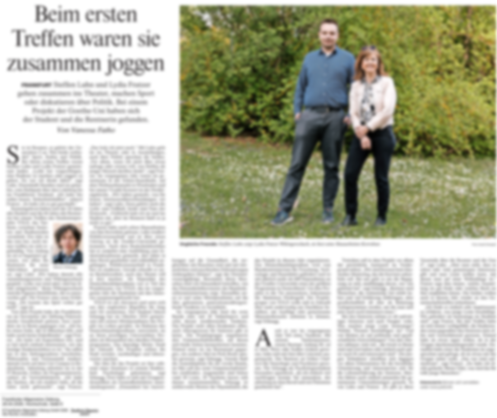

Frankfurt am Main
Psychologie · Kunst · Musik
Ich baue Gemeinschaft — mit Psychologie als Werkzeug.
Simon Schaugg, Gründer von YOLD und Mitgründer von NeuHier — Psychologie und praktische Erfahrung im Aufbau von Gemeinschaft, zu Generationenaustausch, Einsamkeit und sozialem Ankommen.
Ich verbinde psychologische Forschung mit dem Aufbau realer Gemeinschaft — an der Goethe-Universität zu Identity Leadership und sozialer Identität, mit YOLD und NeuHier in eigenen Projekten. Medien und Fachpublikum fragen mich als Experten für Identität, Zugehörigkeit und Gemeinschaft.
Diese Website ist zugleich mein Portfolio: Sie zeigt, wie ich aus einer psychologischen Frage ein Projekt mache — von der Idee über Positionierung und Produkt bis zu Partnerschaften, Presse und echten Nutzer:innen.
Im Fokus · F.A.S., Titelseite Rhein-Main & Hessen
Ausschnitte · 2026
„Den Leistungsdruck nicht mit in den Ruhestand nehmen."
Titelseiten-Interview in der Frankfurter Allgemeinen Sonntagszeitung darüber, was psychologisch geschieht, wenn nach Jahrzehnten im Beruf die Rolle wegfällt, die das Selbstbild getragen hat.
Interview auf faz.net lesen ↗
Beim ersten Treffen waren sie zusammen joggen
Die F.A.Z. begleitet ein YOLD-Tandem: Steffen Luhn und Lydia Fratzer, Student und Rentnerin, gehen ins Theater, machen Sport und diskutieren über Politik. Über das Projekt, das Simon Schaugg im Oktober 2024 mit Mitstipendiaten ins Leben gerufen hat.
F.A.Z., 28.04.2026, Hochschule, Seite 6 · von Vanessa Fatho Bericht lesen ↗Pressematerial und Bilder
Berichte, Interviews und Podcasts
Weitere Presse ansehen ↗Projekte
Gemeinschaft & AnkommenYOLD
Intergenerationale 1:1-Tandems zwischen Menschen ab etwa 60 und unter 30 — gegen Einsamkeit im Alter, gegen fehlenden Zugang in der Jugend. {{ yoldRegDisplay }} Anmeldungen, {{ yoldMatchesDisplay }} Tandems, Finalist beim Social Impact Award Germany 2026.
Projekt ansehen ↗ Mitgründer · seit 2026NeuHier
KI-gestützte soziale Begleitung für internationale Fachkräfte und Studierende, die neu nach Deutschland kommen — Kultur erklären, echte Kontakte vermitteln. Finalist, International Founders Award, Local Final Hessen 2026.
Projekt ansehen ↗Über mich

Mich hat nie eine einzelne Disziplin interessiert, sondern der Mensch selbst — als denkendes, fühlendes und nach Sinn suchendes Wesen.
Aufgewachsen in Heidelberg, in einer Familie mit Kunst, Musik und Sprache, gingen für mich Psychologie, Zeichnung und Klavier nie getrennte Wege: Sie sind unterschiedliche Sprachen für dieselbe Wirklichkeit. Auch meine heutige Arbeit — Forschung, Bild, Klang, Projekte wie YOLD und NeuHier — folgt dieser einen Frage: Wie entstehen Identität, Sprache und Gemeinschaft, und wie begegnen Menschen einander?
Für Vorträge, Presseanfragen und Kooperationen — jederzeit erreichbar.

{kind=link}
Simon Schaugg lebt und arbeitet in Frankfurt am Main — zwischen Psychologie, Bild und Klang. Kontakt.
s.schaugg@gmx.de